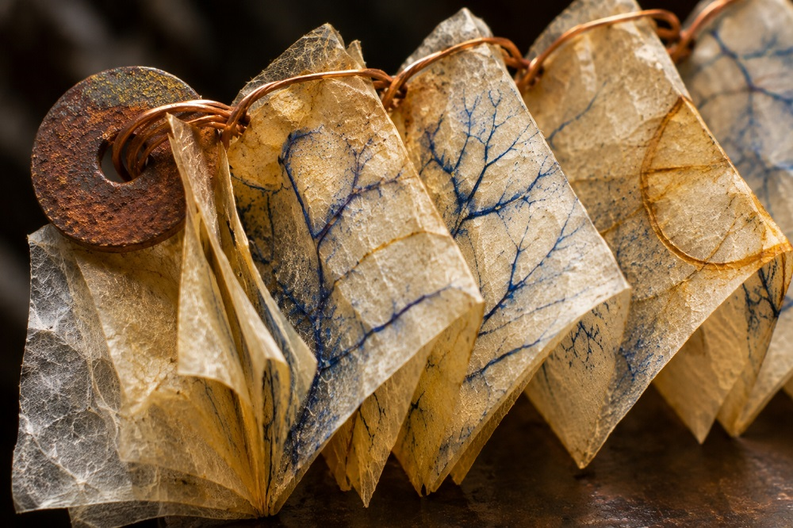

Home > Blog The Log of a Librarian > Indigenous Knowledge and Memory (01)
Indigenous Knowledge and Memory (01)
How Indigenous Knowledge Entered the Archive
Collection, Documentation, and the Historical Production of Indigenous Holdings
This post is part of a series exploring the relationships between Indigenous knowledge systems, libraries, and archives. It examines the histories, practices, conflicts, and responsibilities involved in documenting, preserving, organizing, and transmitting Indigenous knowledge, with particular attention to cultural authority and the limits of institutional intervention. Check all the posts in this section's index.
Collections Have Histories
A manuscript written in an Indigenous language, a recording of a traditional song, a collection of oral narratives, or a set of ethnographic photographs may have been preserved in a library for generations. Its catalogue record identifies a title, a creator or collector, a date, a place, and perhaps the circumstances of acquisition. The institution may regard it as an important part of its historical or cultural holdings.
But how did it get there?
The answer is not always straightforward. Some materials were purchased, donated, or commissioned. Others were obtained during scientific expeditions, missionary activities, administrative investigations, or periods of armed conflict. Some were produced by Indigenous authors for their own purposes and subsequently entered external collections. Others resulted from collaborations between Indigenous knowledge holders and researchers whose interests, methods, and authority were very different.
These histories matter because archives do not simply receive materials that already exist independently of them. Documentary practices help determine what is recorded, how it is represented, which elements are selected for preservation, and what eventually becomes available for consultation.
Understanding Indigenous holdings therefore requires examining the processes through which they were produced and assembled. The history of a collection is also a history of the relationships that made its existence possible.
Missionaries, Languages, and Written Records
Missionary institutions played an important role in the production of documentary materials concerning Indigenous peoples, particularly during European colonial expansion.
Language learning was frequently central to evangelization. Missionaries compiled vocabularies, grammars, catechisms, translations, and collections of expressions that could facilitate religious instruction. These documents sometimes preserved substantial information about languages whose written documentation was otherwise limited.
Their production, however, followed particular objectives. A grammar written to assist missionaries was not necessarily intended to describe a language according to its speakers' own categories. Religious texts privileged vocabulary and concepts relevant to Christian teaching. Translation could introduce unfamiliar distinctions or reorganize existing meanings within European theological frameworks.
The results were not uniform. Missionary linguistic work varied considerably across regions, periods, religious orders, and individual authors. Some documents provide detailed observations of pronunciation, morphology, and usage. Others contain serious misunderstandings or represent languages through categories poorly suited to their structures. Many also depended on Indigenous teachers, translators, and scribes whose contributions were not always acknowledged.
One particularly revealing example is the Florentine Codex, produced in sixteenth-century New Spain under the direction of the Franciscan Bernardino de Sahagún.
The manuscript, completed in 1577, contains twelve books addressing subjects ranging from religion and political organization to medicine, natural history, and the Spanish conquest of Mexico. Its production involved Nahua elders, scholars, scribes, and painters. Among the named collaborators were Antonio Valeriano, Alonso Vegerano, Martín Jacobita, and Pedro de San Buenaventura, scholars trained in Nahuatl, Spanish, and Latin at the Colegio de Santa Cruz de Tlatelolco.
The work was therefore much more than a European missionary's description of an Indigenous society. Nahua intellectuals participated in gathering testimony, interpreting information, composing texts, and producing images. Their work shaped the manuscript itself.
At the same time, the project developed within a colonial religious institution and was organized according to objectives that included understanding Indigenous beliefs and practices for purposes of evangelization. Its encyclopedic structure drew on European scholarly traditions, while its contents incorporated Nahua intellectual and pictorial practices.
The manuscript eventually reached Europe and is now preserved in the Biblioteca Medicea Laurenziana in Florence.
Its history illustrates the difficulty of assigning a single character to colonial documentation. The Florentine Codex emerged from unequal political circumstances, missionary objectives, and substantial Indigenous intellectual participation. Understanding its production requires keeping all of these dimensions visible.
Collecting for Science
During the nineteenth and early twentieth centuries, anthropology, linguistics, archaeology, and ethnomusicology contributed to the growth of Indigenous collections in museums, libraries, universities, and research institutions.
Researchers assembled vocabularies, genealogies, narratives, photographs, drawings, artefacts, musical transcriptions, and descriptions of social practices. The development of sound recording and photography expanded the possibilities of field documentation.
Many investigators worked under the assumption that Indigenous societies and cultural practices were disappearing. This outlook, often associated with salvage anthropology, encouraged the rapid documentation of languages, rituals, material culture, and other expressions considered endangered by colonial expansion, population displacement, and social transformation.
The concern was not entirely imaginary. Colonial violence, epidemic disease, dispossession, compulsory schooling, and restrictions on Indigenous languages and practices had produced profound disruptions. But the expectation of disappearance also shaped research priorities. Investigators frequently privileged what they considered traditional or ancient, sometimes treating contemporary transformations as evidence of cultural decline rather than as part of ongoing Indigenous histories.
The resulting collections often reflected the interests of particular disciplines. Linguists sought grammatical structures and lexical information. Ethnographers documented social organization and ritual. Music researchers recorded songs and instrumental performances. Archaeologists collected material remains. The categories through which information was gathered influenced what was considered worth recording.
In March 1890, the American ethnologist Jesse Walter Fewkes made wax-cylinder recordings of Passamaquoddy men in Maine. The recordings included narratives, vocabulary, number lists, and songs. Among the recorded speakers were Noel Joseph and Peter Selmore. These cylinders, now held by the Library of Congress, are among the earliest surviving ethnographic field recordings.
Their existence depended on several circumstances: the availability of recording technology, Fewkes's research interests, the participation of Passamaquoddy speakers, and the subsequent survival and institutional transfer of the cylinders.
The recording captured voices that can still be heard more than a century later. Yet the cylinders did not preserve the entirety of the relationships, occasions, meanings, and circumstances through which those voices and their knowledge were ordinarily understood.
An ethnographic recording is evidence of a particular documentary encounter. It may contain valuable knowledge, but it is not an unmediated reproduction of the cultural world from which that knowledge emerged.
The Many Routes into a Collection
Not all Indigenous holdings entered institutions through direct fieldwork.
Collectors bought manuscripts and artefacts from individuals, dealers, other collectors, and institutions. Archaeological excavations transferred materials from sites into museums. Administrative offices accumulated correspondence, maps, censuses, legal records, and reports concerning Indigenous territories and populations. Missionary organizations retained translations, educational materials, and correspondence. Private collections were eventually donated or sold to public institutions.
These different routes created different documentary histories.
The collection assembled by George Gustav Heye, which became the foundation of the Smithsonian's National Museum of the American Indian, offers an instructive example of large-scale collecting. Beginning in the late nineteenth century, Heye acquired material through purchases, archaeological expeditions, dealers, institutional exchanges, and the work of researchers he supported. By the time of his death in 1957, the collection represented an enormous accumulation of Indigenous material culture from across the Americas.
Its development reflected the resources and ambitions of a private collector, the growth of American anthropology, and the networks through which Indigenous materials circulated.
Purchases could be documented as legitimate transactions while leaving unanswered questions about the circumstances in which objects had originally been obtained. Materials acquired through intermediaries could arrive with incomplete information about their makers or previous custodians. Excavations could preserve archaeological evidence while separating objects from sites and from communities maintaining relationships with those places.
These problems do not mean that all acquisitions should be assigned the same history or ethical interpretation. A manuscript intentionally sold by its author, a recording made through negotiated collaboration, an object obtained under coercion, and materials removed from a burial site involve different circumstances.
Historical investigation requires distinguishing them. It also requires recognizing that the surviving documentation may not permit definitive conclusions. Acquisition registers, correspondence, expedition reports, and receipts can reveal important details, but they often represent the perspective of the person or institution receiving the material. Their silence about the intentions or experiences of others cannot be treated as evidence that those perspectives did not exist.
Indigenous Participation in Documentary Production
The conventional history of ethnographic collecting frequently places the external researcher at its center. The anthropologist collects, the linguist transcribes, the missionary translates, and the archivist preserves. Indigenous peoples appear as informants, performers, or subjects of observation.
This arrangement can obscure the intellectual labor through which collections were actually produced.
Field researchers depended on people who explained terminology, identified places and relationships, interpreted unfamiliar expressions, narrated histories, performed music, corrected transcriptions, and decided what could be communicated. Some Indigenous collaborators became researchers, authors, translators, photographers, and collectors themselves.
Their participation was not necessarily equivalent to control over the resulting documents. A person could contribute extensive knowledge without determining how it would be classified, published, or preserved. Payment, acknowledgement, consent, and authority varied considerably. Some collaborations developed over decades; others were brief encounters conducted under conditions of substantial inequality.
The difference between participation and control is therefore essential.
Returning to the Florentine Codex, the roles of Nahua intellectuals cannot adequately be described through the language of assistance alone. Their work involved scholarly interpretation, translation, composition, and pictorial representation. Yet the manuscript's subsequent circulation, institutional attribution, and preservation history placed Bernardino de Sahagún at the center of its identity for centuries.
The case invites a broader examination of catalogue records and collection descriptions. When a historical document identifies an ethnographer as its creator, what exactly does that designation mean? Who produced the information? Who determined its form? Who selected what would be retained? And whose intellectual contributions remain outside the recorded account?
These are historical questions before they become questions about contemporary cataloging practice. They require investigating the actual circumstances of documentary production rather than simply replacing one attribution with another.
What the Archive Selected
The formation of Indigenous collections also involved decisions about what deserved preservation.
Some materials entered institutions because they were considered scientifically valuable. Others were retained as examples of linguistic diversity, artistic production, religious beliefs, or historical events. Administrative records survived because governments needed them. Missionary documents were preserved within religious institutions. Personal papers were kept because their creators acquired scholarly or political importance.
Different purposes produced different kinds of evidence.
A collection of recorded songs may tell us much about a researcher's interest in musical structure while offering little information about the social occasions in which those songs were performed. A vocabulary may contain hundreds of names for plants without explaining how speakers distinguished those plants in practice. A photograph may document a ceremony while concealing the circumstances in which the image was requested, arranged, or permitted.
Selection occurred at several moments: during the initial encounter, when information was recorded; when the resulting materials were organized and interpreted; and when institutions decided what to retain, catalogue, publish, or discard.
The surviving archive is consequently not a transparent representation of the knowledge available within a society at a particular historical moment. It is the result of successive decisions made by people occupying different positions, working with different purposes, and exercising different degrees of authority.
This observation does not diminish the historical importance of Indigenous collections. Many contain irreplaceable evidence, including records of languages, places, practices, and personal histories that might otherwise be difficult to reconstruct. But their value becomes clearer when their documentary limitations are recognized.
Reading the History of a Collection
For libraries and archives, examining how Indigenous materials entered their holdings requires more than reconstructing a chain of ownership.
Provenance research can investigate who produced a document, who contributed information, which circumstances shaped its creation, and how it passed between individuals and institutions. Correspondence, accession registers, field notebooks, earlier catalogues, publication histories, and related collections may help reconstruct those processes.
Where possible and appropriate, Indigenous historical knowledge and testimony can clarify relationships that institutional records describe incompletely or inaccurately. The research may also reveal disagreements that cannot be settled by the surviving documents.
There are limits to what can be recovered. Some transactions were never documented, names were omitted, and materials became separated from their accompanying records. Historical terminology can be ambiguous, and institutional accounts may contradict one another.
Such uncertainty should remain visible rather than being resolved through unsupported assumptions.
It is equally important to avoid treating every Indigenous collection as evidence of an identical colonial process. The history of a manuscript produced by Indigenous authors, a missionary vocabulary, an ethnographic recording, and a collection of administrative correspondence cannot be reconstructed through a single explanation. Each has its own documentary circumstances, even when those circumstances belong to broader histories of colonial expansion and unequal power.
The starting point is therefore quite ordinary: asking where a collection came from, how it was made, and whose work and decisions contributed to its existence. Those questions can change how libraries understand materials they have held for decades or centuries.
Before considering who should control a collection, how it should be described, or under what conditions it should circulate, we need to understand how it became a collection in the first place.